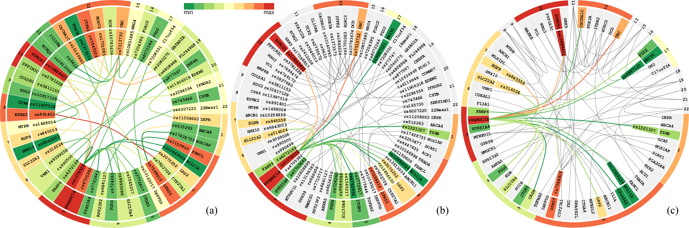
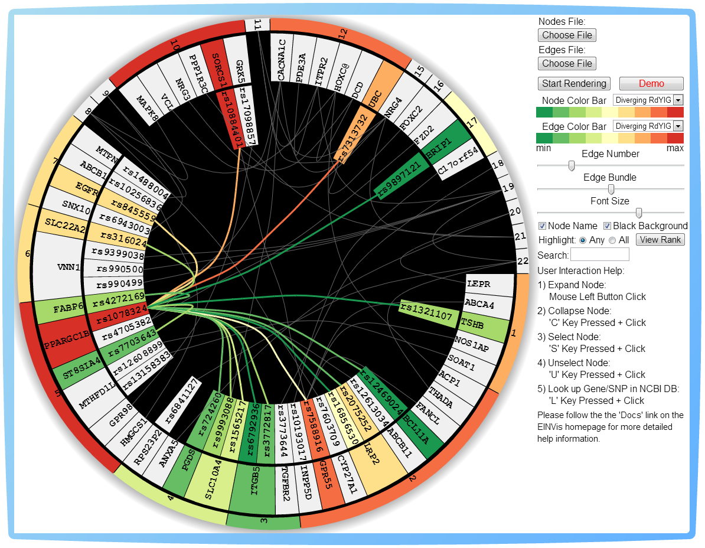
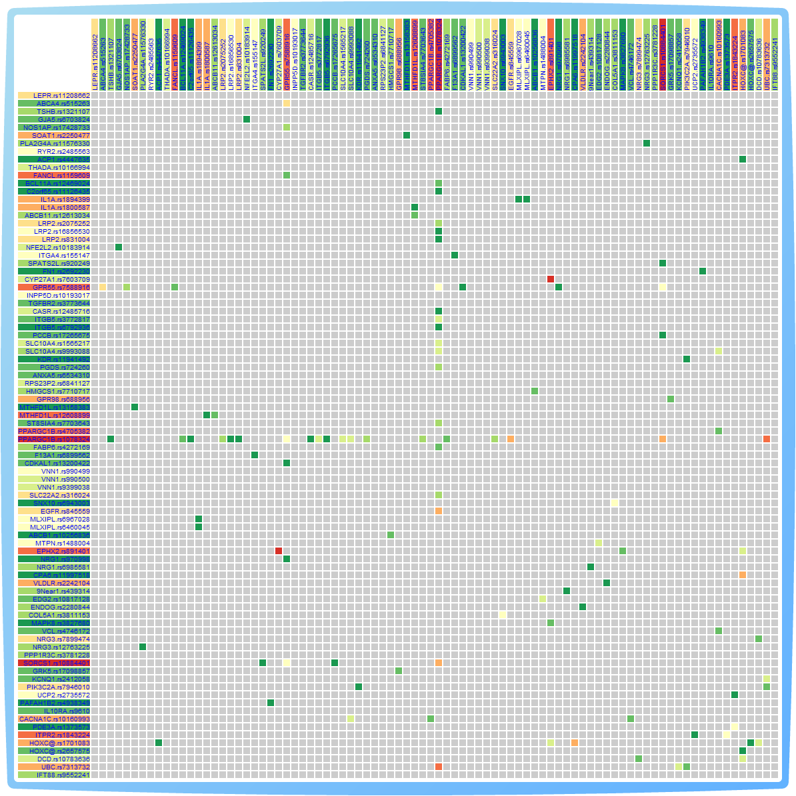
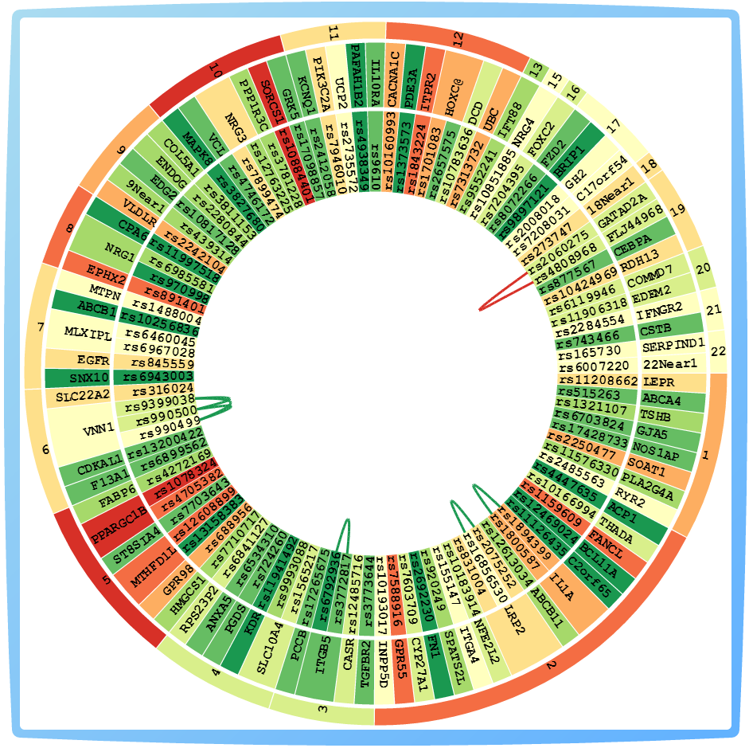

EINVisA visualization tool for analyzing and exploring genetic interactions in large-scale association studiesYubao Wu, Xiaofeng Zhu, Jian Chen, Xiang Zhang Home Documents Tutorials Publication Run |
EINVis DescriptionEpistasis (gene-gene interaction) is fundamentally important to understand the genetic architecture of complex traits. The goal of epistasis detection is to identify interacting single nucleotide polymorphisms (SNPs) that have strong associations with the phenotype of interest. Various methods have been developed to find epistatic interactions in large-scale genetic association studies. Representing the detected epistatic interactions visually by networks is an effective way to demonstrate the interplay between different SNPs and genes. EINVis is ONLINE FREE software that allows users to visualize and explore the epistatic interaction networks. EINVis provides three different views: EIN Tree Ring View, EIN Matrix View, and LD Tree Ring View. EIN Tree Ring View uses the circular layout to visualize the hierarchical SNP-gene-chromosome structure and network structure simultaneously. EIN Matrix View visualizes the SNP-pair adjacency matrix representing the SNP-SNP interactions. LD Tree Ring View visualizes the LD information between SNPs. EINVis exerts the VisBubbles and Code Bubbles ideas for user interface design. Each view is rendered as a bubble. The bubbles can be moved and overlapped with each other. EINVis project is also maintained in SourceForge: EINVis Project. One screenshot of the EIN Tree Ring View is shown as follows. |
|  |
|
One screenshot of the EIN Matrix View is shown as follows. |
|  |
|
One screenshot of the LD Tree Ring View is shown as follows. |
|  |
|
We have provided detailed online tutorial and documentation. Please enjoy using our visualization tools! This application "EINVis" is open source and was developed using JavaScript language. It uses the HTML5 canvas (2D) element to draw the graphics in a webpage. |